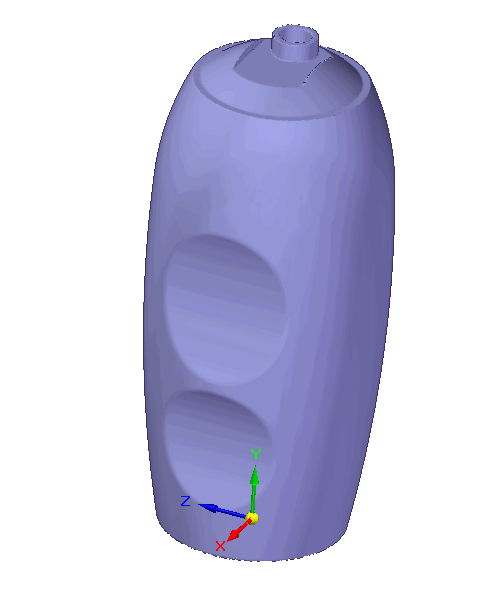
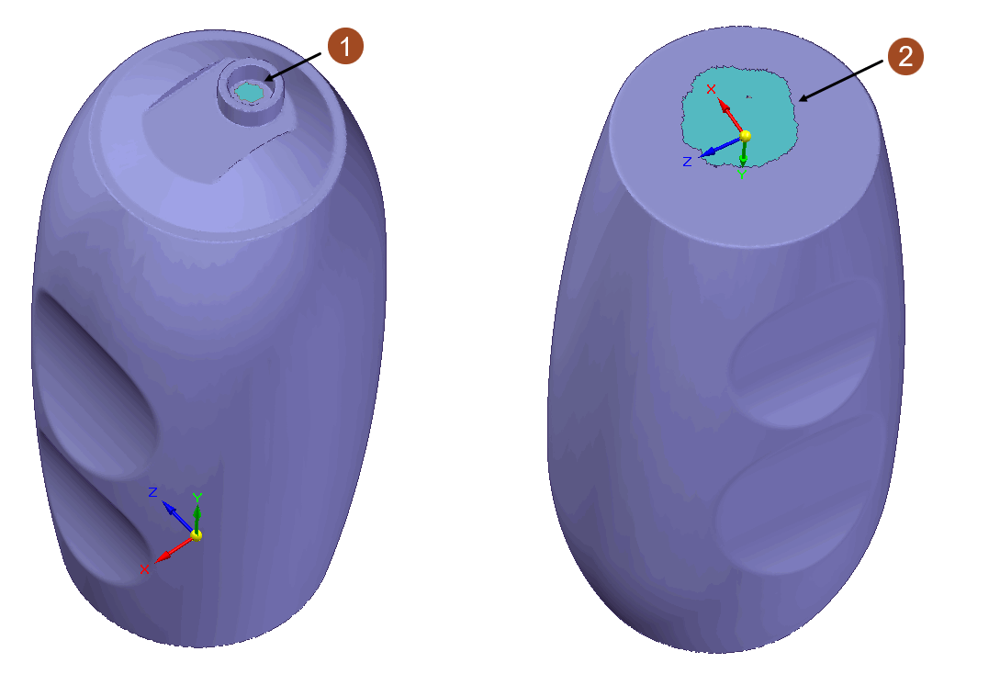
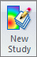
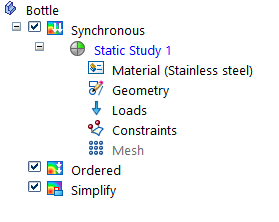
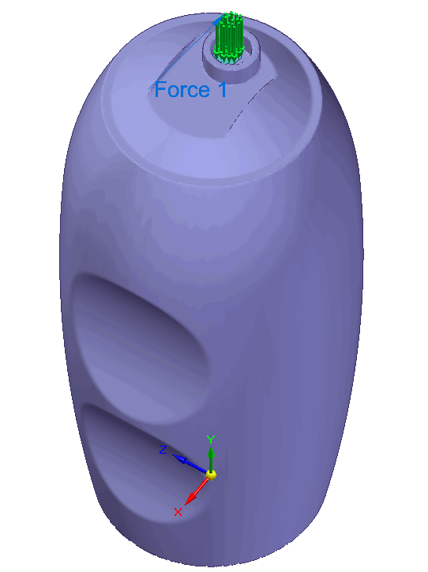
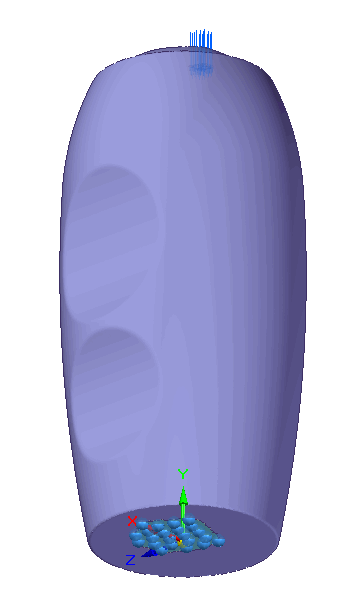
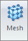
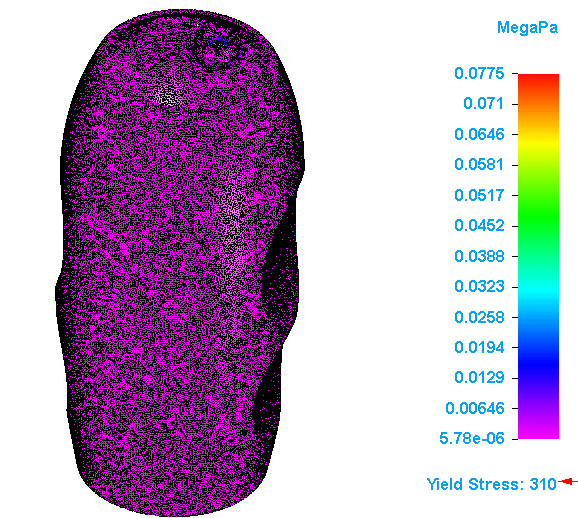

Create and solve a study using an STL model
This example shows how you can create and solve a linear static study for an open STL model. It demonstrates how to open or create a file, clean up the geometry, identify geometric regions, create mesh, apply loads & constraints, and solve the simulation.

-
To create a new document from an existing STL file, choose File → Open → Browse and select the STL documents (*.stl) file type filter to identify a valid file type.
When prompted, choose one of the Standard Templates for the selected file.
-
Right-click a part and choose Move to Synchronous to move a part to the synchronous modeling environment.
Note:The Reverse Engineering tab is available in the synchronous modeling environment.
-
On the Reverse Engineering tab, under the Cleanup Mesh group, select the Fill Holes command to fill the holes and voids in the model.
Note:An open STL geometry model cannot define a Solid Edge Simulation. You must convert the model to a closed geometry STL model.
-
On the Reverse Engineering tab, under the Identify Regions group, select the Manual command to create the geometric regions. In this example, the geometric regions are created on the top (1) and bottom (2) faces of the part.

Tip:You can use the Automatic command to create the regions automatically by adjusting the accuracy.
Note:An STL model has only a single face. You must create the geometric regions to apply the loads and constraints.
-
Create a simulation study.
-
On the Simulation tab → Study group, select the material from the Material List.
-
Choose Simulation → Study → New Study

. -
Choose the Linear Static study type and Tetrahedral mesh type, and then click OK.
The new study is listed in the Simulation pane.

-
-
Select an STL geometry to include in the study.
When creating a new study for a solid part model with a Mixed or Tetrahedral mesh type, the Simulation tab → Geometry group → Define command runs automatically. On the Define command bar, select the design body and click Accept.
-
Define the load condition.
The force load is applied to the geometric region created on the top face using the Force command in the Structural Loads group.

-
Apply a fixed constraint.
A fixed constraint is applied to the geometric region created on the bottom face using the Fixed command in the Constraints group.

-
Mesh and solve the study.
-
Choose Simulation → Mesh → Mesh

. -
In the Tetrahedral Mesh dialog box, select the Body Mesh option and then click Mesh & Solve.
The part is meshed and solved. The solution is displayed in the Simulation Results environment.

Note:To improve the mesh for a complex part, we recommend that; you select the Body Mesh option in the Mesh dialog box.
-
How do I
Verify simulation material propertiesCreate a study
Create a study using a simplified model
Define a coupled study for thermal stress analysis
Assign units in studies
Define and review a transient heat study
Define a harmonic frequency response study
Learn more
Creating and using studiesUsing materials in studies
Modifying studies
Structural studies
Thermal studies
Using steady state heat transfer studies
Coupled studies
Harmonic response studies
Create and solve a study using GD optimized model
Defining thermal studies
Look up more details
Create Study (or Modify Study) dialog boxTransient Heat Options dialog box
Options: Harmonic Frequency Analysis dialog box